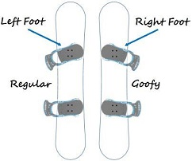
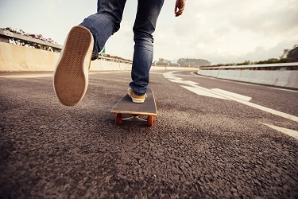
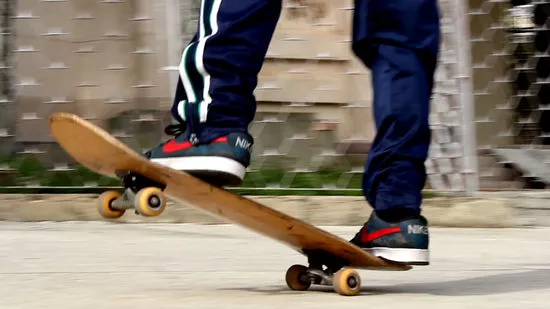
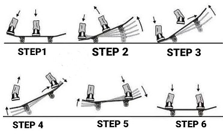
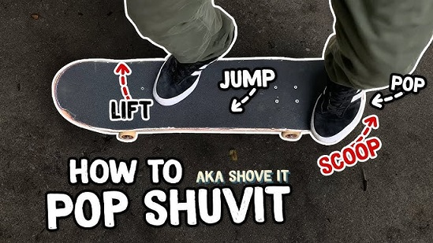
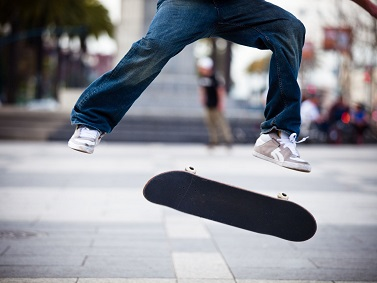

To make skateboarding safer, you should get yourself a helmet and some knee/elbow paddings. Later when you get better and more comfortable, you can skate without them!
Stance
There are two main stances:
1.Regular This is the most common way of standing on the skateboard. You place your left foot above the upper bolts and right foot on the other bolts and your way of movement should be toward your left leg.
2. Goofy The same as regular but mirrored! Right foot ahead and left behind!
Pushing
1. Stand with your feet parallel to your board and next to the rear wheels
2. Place your dominant foot at the front of the skateboard just behind the front trucks, with the tip of your shoe at a 45-degree angle and over the bolts
3. Bend your front leg knee and lean forward
4. Bend your back knee slightly
5. Push off the ground with your rear foot
6. As the skateboard starts moving, and bring your back foot onto the deck, in a smooth movement
7. Use both arms to keep your balance on the board
8. Turn your chest perpendicular to the board and twist your front foot's heel so that it lies across the deck
9. Reposition your feet perpendicular to the board and skate away
10. Are you losing speed? Place your back foot again on the ground, push once or twice, and resume riding
Manual
1. Push on your skateboard at low-to-medium speed
2. Put your front foot angled slightly forward over the bolts and the back foot on the tail's edge
3. Bend your front knee and keep your back straight
4. Look at the ground just ahead of the board
5. Slowly lift your board off the ground by pushing down on the back of the board
6. Hold the nose of the board up for as long as you're comfortable
Ollie
1. While the front foot is positioned between the middle of the board and the bolts of the front truck, the ball of the back foot is placed in the middle of the tail.
2. To get yourself and the board off the ground, press the back foot quickly down on the tail towards the ground making a pop like motion.
3. As soon as the tail hits the ground, jump upward and slide your front foot from the middle of the board towards the nose simultaneously.
When the tail hits the ground you will hear the iconic skate sound.
4. It’s important that your front foot is well placed on the grip tape so your front foot doesn’t slide off the board.
Both the move of popping the tail of the board, jumping and dragging your front foot up the board have to be done in a fluent, well-coordinated, simultaneously motion so you get the proper Ollie motion.
5. If everything has worked you should be in the middle of the jump phase.
Now your board is with both trucks up in the air with yourself over it. At the highest point you should prepare yourself for the landing.
6. Try to land with both feet over the bolts of your trucks and your body over the center of the board to maintain your balance.
This also keeps you from landing too hard and cracking or breaking your board.
7. Make sure you bend your knees a little bit to cushion the landing and to keep your center of gravity balanced.
Now keep doing it until you have it on lock!
Shuvit
Your front foot is on front hardwares or little bit more backward. Place your back foot on edge of tail and your toe is little out from tail. Your body weight is center of the board.
Your body turns to forward and look around nose. Make sure you can see your board spinning. Once your made your stance, bend your knees a little to get power to spin your board. This bending knee motion is common in almost all tricks in skateboard.
Do a really light jump to right above and push side of tail with your back foot. It is not like pushing tail strongly only with your foot but rather, adding a small amount of power from your waist to your back foot toe and push softly. Do not push toward down side but toward side of your back. Make sure your body weight stays at same position to make your board spin right under you.
To prevent your front foot from interrupting spin of your board, pull up your front foot right after pushing tail. Keep looking your board to catch it with your front foot. Again do not lose your balance and body weight.
Wait your board finish spinning and catch it with your front foot. Ideal landing is relaxing landing tension by using your knees.
Kickflip
1. Place your back foot similar to an Ollie position on the tail.
Your front foot should be a bit behind the bolts of your front truck and slightly turned with your toes toward the nose of your board so you can slide your foot up the board and off the nose behind you.
2. After you pop your tail, drag your front foot over the grip towards the nose.
The toe side of your shoe should slide off the nose in a slight angle.
3. This motion across the corner of the nose makes the board do the flipping motion.
It is almost like a karate kick, hence the term “Kickflip”.
4. After the toes of your front foot have left the nose the board starts to rotate.
Be patient and practice to find the right amount of power needed in the kick, the right timing and the correct front foot position.
5. When board is done with rotating try to catch it with your feet on the bolts of your trucks and ride away clean.
6. It maybe will take some time to get your Kickflips straight but once mastered you can pull them off like Ollies.
And the list goes on
These will be enough for starters! There are numerous tricks you can google or ask from friends and the sky seems to be the limit!